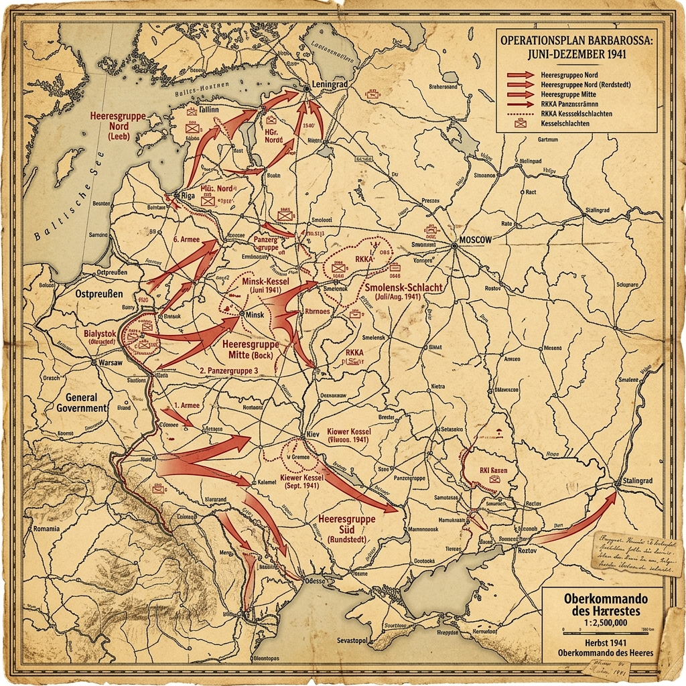

Strategic Context & Geopolitical Buildup
Operation Barbarossa was the ideological and strategic center of Adolf Hitler's foreign policy. As outlined in Mein Kampf, Hitler believed that Germany's survival depended on the acquisition of Lebensraum (living space) in Eastern Europe and the complete destruction of 'Judeo-Bolshevism'. The agricultural wealth of Ukraine and the vast oil reserves of the Caucasus were to feed and fuel the Third Reich, making it self-sufficient and immune to naval blockades.
Stalin, despite warnings from his own intelligence networks and Western leaders, believed that Hitler would not attack until Britain was defeated. The Soviet military was in a state of transition; Stalin's purges of the late 1930s had executed or imprisoned over 30,000 officers, including Marshal Mikhail Tukhachevsky, leaving the Red Army leadership inexperienced and terrified of taking initiative.
Military Doctrines & War Plans
The German plan, finalized in December 1940 under Directive No. 21, envisioned a rapid invasion along three main axes: Army Group North toward Leningrad, Army Group Center toward Moscow, and Army Group South into Ukraine. The goal was to destroy the bulk of the Red Army west of the Dnieper and Dvina rivers, preventing their retreat into the vast Russian interior, and reach the Archangel-Astrakhan (A-A) line within four months.
The Soviet defensive plan relied on forward defense. Stalin insisted on holding every inch of territory, deploying massive armies close to the border. This deployment played directly into the German strategy of encirclement, as it prevented Soviet forces from executing a flexible retreat or preparing defensive lines in depth.
Weapons, Technology, and Logistics
The German forces deployed the Panzer III and IV tanks, supported by motorized infantry and the Luftwaffe. However, the Wehrmacht was not fully mechanized; they relied on over 600,000 horses for logistics and transport, which struggled to keep pace with the rapid tank spearheads.
The Soviet Union possessed vast quantities of military equipment, including the KV-1 heavy tank and the Katyusha rocket launcher. However, most units lacked radios, spare parts, and adequate ammunition, and poor maintenance meant that a large percentage of Soviet armor broke down before reaching combat.
Opening Moves & Initial Clash
At 3:15 AM on June 22, 1941, the Axis powers launched the invasion along an approximately 1,800-mile front and caught the Red Army largely by surprise. The Luftwaffe struck over 60 Soviet airfields, destroying over 1,200 aircraft on the first day, mostly on the ground, and establishing absolute air superiority.
German armored spearheads under generals like Heinz Guderian and Hermann Hoth bypassed Soviet border units, plunging deep into the rear. Within days, they executed massive encirclements at Bialystok-Minsk, capturing over 300,000 Soviet soldiers and destroying entire armies, while Stalin remained in a state of shock, unable to coordinate a coherent response.
The Combat Narrative & Critical Phases
During July and August, the German armies advanced rapidly. Army Group North advanced through the Baltic states, reaching the outskirts of Leningrad by early September and initiating the Siege of Leningrad. Army Group South faced stiffer resistance but captured Kiev in September, resulting in the encirclement and capture of over 650,000 Soviet troops.
However, the advance began to slow. The distances were immense, and the logistics network was failing. The Russian rail gauge differed from the European standard, requiring time-consuming transfers of supplies. Furthermore, partisan units began to harass German supply lines in the forests of Belarus and western Russia.
The Battle of Moscow: Operation Typhoon
In October 1941, Hitler launched Operation Typhoon—the final offensive to capture Moscow. The Germans initially won another massive double-encirclement at Vyazma and Bryansk, capturing another 600,000 soldiers. The Soviet government evacuated to Kuibyshev, and panic gripped the capital.
Stalin remained in Moscow and appointed Marshal Georgy Zhukov to command the defenses. Zhukov mobilized civilians to dig anti-tank ditches and brought in veteran Siberian divisions from the Far East, after intelligence confirmed that Japan would not attack the Soviet Union. As the autumn rains (the Rasputitsa) turned the unpaved roads into deep mud, the German mechanized units ground to a halt.
The Winter Counteroffensive
By late November, temperatures dropped, freezing the mud and allowing the Germans to resume their advance. Armored patrols reached the suburbs of Khimki, just 12 miles from the Kremlin. However, the Wehrmacht was exhausted, lacking winter gear, anti-freeze, and basic supplies, while their vehicles failed to start in the -30°C cold.
On December 5, 1941, Zhukov launched a massive counteroffensive, utilizing fresh Siberian troops equipped for winter warfare. The surprised and freezing Germans were thrown back up to 150 miles from Moscow. This was the first major retreat the Wehrmacht had suffered in the war, ending the myth of German invincibility.
The Soldier's Ordeal & Civilian Impact
The Eastern Front became a conflict of unprecedented brutality. The German OKW issued the Commissar Order, which instructed troops to execute captured Soviet political commissars immediately, violating the Geneva Convention. Over three million Soviet POWs died of starvation, exposure, or execution in German camps during 1941-1942.
Behind the front lines, Einsatzgruppen followed the Wehrmacht, executing Jews, Roma, and communist officials. The Babi Yar massacre in Kiev saw the execution of over 33,000 Jews in just two days. The Soviet population suffered from scorched-earth policies; Stalin ordered the destruction of all crops, livestock, and infrastructure that could be used by the invaders, leaving millions of civilians to face starvation.
The Aftermath & Immediate Consequences
Operation Barbarossa failed as a strategic campaign even though it produced enormous operational successes. The Red Army was badly battered but not destroyed; Moscow did not fall; and the Archangel–Astrakhan line was never reached. Calling the June–December 1941 phase a simple 'Soviet victory' misstates the catastrophe of the summer encirclements—yet Germany's inability to knock the USSR out of the war before winter was a decisive strategic failure for the Axis.
The failure of the offensive forced Germany to mobilize its economy for total war. It also cemented the Alliance between the Soviet Union, Great Britain, and the United States, which began shipping vital supplies to the USSR via the Arctic convoys and the Persian Corridor (Lend-Lease).
Historical Legacy & Long-term Impact
Barbarossa opened the Eastern Front, which would absorb the majority of German combat power and roughly four-fifths of German wartime military casualties. The campaign's failure did not end the war, but it ended any realistic German hope of a short European conflict and locked the Third Reich into a grinding war against a state with superior manpower reserves and an industrial base relocated east of the Urals.
In Soviet and Russian history, this conflict became known as the Great Patriotic War, serving as a defining historical narrative of sacrifice, resilience, and victory, though at the cost of over 27 million Soviet lives.
The Axis Perspective
German planning for Barbarossa rested on racial ideology as much as on maps. The Soviet state was assumed to be corrupt, brittle, and racially inferior; many in the High Command expected collapse within weeks. That belief licensed both operational daring and criminal orders that turned the campaign into a war of annihilation from the first day.
Franz Halder, Chief of the OKH General Staff, wrote on 3 July 1941—barely two weeks in: "It is thus not an exaggeration to say that the Russian Campaign has been won in the space of two weeks." Early encirclements at Minsk and elsewhere seemed to prove him right. Then the distances grew, the rail gauge problem bit, and Soviet formations kept appearing where German staff tables said none should exist.
German troops were shocked by the T-34 and KV tanks, by the ferocity of surrounded units that refused tidy surrender, and by the autumn mud and winter cold that their logistics had not seriously prepared for. Heinz Guderian later summarized the mood outside Moscow: "The offensive on Moscow failed... We suffered a miserable defeat, the strength and morale of our troops being heavily depleted."
By December the illusion of a short war was dead. Germany was locked into an attritional struggle against a state with larger manpower reserves, relocated industry east of the Urals, and growing Allied supply support. For the Axis, Barbarossa's 'perspective' ends not in triumph but in the discovery that they had started a war they could not finish on their own terms.
Tactical Map & Theater of Operations
The vast scale of the Eastern Front invasion routes and offensive lines mapped chronologically:

Figure: Operation Barbarossa, 1941: Detailing the massive three-pronged offensive by Army Groups North, Center, and South into Soviet territory, alongside major encirclement battles.
Unusual and Little-Known Facts
Barbarossa is remembered for its scale. The details that surprise are often the ones that reveal how fragile, improvised, and ideologically warped the invasion really was.
The 'modern' Wehrmacht still depended on horseflesh. Roughly 600,000 horses hauled guns, supplies, and wagons into the Soviet Union. When the advance outran its railheads and the autumn mud (rasputitsa) swallowed roads, this pre-industrial logistics base became a critical vulnerability of an allegedly motorized war machine.
Soviet freights were still rolling west under German–Soviet trade agreements almost until the guns opened. Grain, oil, and raw materials moved toward the Reich even as German units massed on the border—an irony of the Molotov–Ribbentrop economic relationship that Stalin clung to until the last hours.
Multiple warnings reached Moscow and were dismissed. Richard Sorge's Tokyo ring, British intelligence, and Soviet border reports all pointed to a June invasion. Stalin treated many of them as provocations designed to drag the USSR into war prematurely—leaving frontier districts disastrously unready at 03:15 on 22 June.
Franz Halder, Chief of the German General Staff, wrote in his diary on 3 July 1941 that the campaign had essentially been won 'in the space of two weeks.' Within months he was staring at a winter crisis outside Moscow. Few primary sources capture German hubris more cleanly.
The T-34 and KV tanks shocked German crews not because Soviet industry was expected to be empty, but because German intelligence had failed to grasp their quality. Wide tracks, sloped armor, and the 76.2 mm gun outclassed most early panzers—yet many Soviet tanks were lost to breakdowns, fuel shortages, and missing radios rather than fair tank duels.
These details do not replace the main operational story—but they are often the ones that stick, because they reveal contingency, myth-making, and human texture beneath the familiar headlines.
Archives, Primary Sources & Further Reading
To explore this campaign further, consult the following resources:
- The National WWII Museum - Operation Barbarossa An in-depth article analyzing the planning errors, tactical execution, and strategic impact of the invasion.
- Britannica - Operation Barbarossa History A scholarly summary of the campaign, featuring troop maps, timeline data, and commander summaries.
- Yale Law School - Avalon Project WWII Documents An authoritative archive of primary source documents, declarations of war, and diplomatic logs.